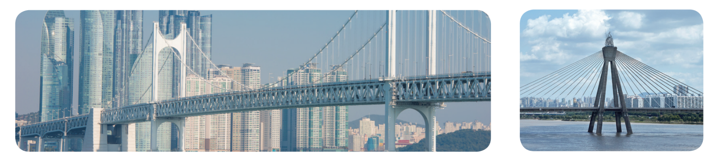

- 물음 1
- 물음 2
- 물음 3
-
광안대교의 길이는 7 km보다 몇 m 더 긴가요?
광안대교: 7 km 420 m올림픽대교: 1470 m7 km보다 420 m 더 깁니다. -
광안대교의 길이는 7 km보다 몇 m 더 긴가요?
광안대교: 7 km 420 m올림픽대교: 1470 m1 km가 1000 m이므로 7 km는 7000 m, 7 km 420 m는 7420 m입니다. -
광안대교의 길이는 7 km보다 몇 m 더 긴가요?
광안대교: 7 km 420 m올림픽대교: 1470 m1000 m가 1 km이므로 1470 m는 1 km 470 m입니다.